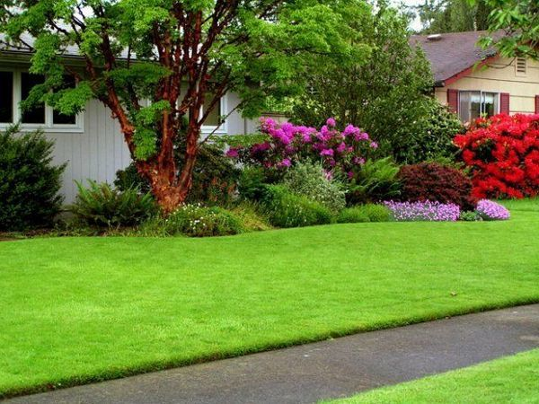

Košnja travnjaka: 9 glavnih problema
Uredno uređeni travnjak čini područje njegovanim i urednim. Ali da travnjačka trava postane gusti smaragdni tepih, morate se malo potruditi.
Jedan od glavnih postupaka koji se ne može zanemariti kod održavanja travnjaka je redovito košenje trave. Važno je znati kada provesti postupak, kako i pod kojim uvjetima. Prvo stvari.
1. Zašto kositi travnjak?
Naravno, travnjak je podrezan iz estetskih razloga, ali to je samo jedan od razloga. Činjenica je da su mnoge sorte travnjačkih trava „divljeg“ porijekla. To znači da su prilagođeni za brzi oporavak. Zato jednom obrezana trava počinje aktivno povećavati bočne izbojke, pročišćavati i kondenzirati. Stoga ga trebate redovito rezati. Ali zgušnjavanje travnjaka koje nastaje kao posljedica uopće nije loše. Gusta trava i ne dopušta da se korov probije.
2. Na kojoj visini treba travnjak kositi??
Kao i kod svake biljke, orezivanje je značajan stres. Naravno, trava se brzo obnavlja, ali morate shvatiti da nakon rezanja brzo gubi vlagu i slabi, zbog čega riskira da se razboli. Da se to ne bi dogodilo, odjednom ga treba skratiti za najviše 1/3 duljine, a nakon postupka - vodu i stočnu hranu.
Ako se trava neredovito i vrlo nisko kosi, na travnjaku mogu rasti korovi i mahovine.
Visina trave u velikoj mjeri ovisi o namjeni travnjaka. Na primjer, za stvaranje zemljana trava (svečani travnjak za otvorene površine) u našoj klimi nemoguće je prerezati travu prenisko (do 1-2 cm), kao što se to radi, recimo, u Engleskoj. Zbog toga će travnjak brzo postati oštar i suh. Dakle, najprihvatljivija visina košenja travnjaka u ovom slučaju je 3-4 cm.

Dekorativni travnjak (krajobrazno vrtlarstvo) može se kositi do visine od 4-7 cm. Takvi su parametri također prikladni funkcionalni travnjak - gdje se opuštaju, igraju igre na otvorenom, piknike.

Ima ih i sportski travnjaci, koji nisu previše tipični za osobne parcele. Namijenjeni su igralištima na kojima se održavaju timske igre: nogomet, hokej na terenu ili golf. Takva su mjesta zasijana uglavnom žitaricama, jer su otpornija na kocanje i travnjak obrezuju na visinu od 3-4 cm.
Vrsta travnjaka | Visina rezanja |
Prizemni travnjak | 3-4 cm |
Dekorativni travnjak za vrtlarstvo | 4-7 cm |
Funkcionalni travnjak | 4-7 cm |
Sportski travnjak | 3-4 cm |
Ako je ljeto vruće i suho, trava se može obrezati malo iznad navedenih pokazatelja kako bi se zaštitila od isušivanja.
3. Kada provesti prvu košnju travnjaka?
Prvo košenje travnjaka treba biti nježno. Obično se provodi prema sljedećoj shemi: kada trava dosegne visinu od 12-14 cm, ona se sije na 8-10 cm. Dalje, tijekom 2 godine, trava se može kositi na prizemnim travnjacima do visine od 4-5 cm, na funkcionalnim i vrtnim parkovima - 5 -7 cm. Obično vrijeme prve frizure pada krajem travnja - sredinom svibnja.
4. Koliko često kosite travnjak tijekom sezone?
Nemoguće je nedvosmisleno odgovoriti na ovo pitanje, jer intenzitet rasta trave nakon košnje ovisi o mnogim uvjetima: vrsti zasađene trave, stanju tla, vremenskim uvjetima, vrhunskom odijevanju i sezoni. Stoga bi se trebali usredotočiti na visinu trave. Čim duljina trave počne premašiti utvrđenu za određenu vrstu travnjaka za 1,5-2 cm - vrijeme je da obrežete travnjak.
U proljeće, kada trava aktivno raste, potrebno ju je kositi u prosjeku 1-2 puta tjedno, ljeti - 1 put u 7-10 dana. Bliže jeseni trava se kosi jednom svaka 2 tjedna.
Ako iz nekog razloga niste kosili travnjak dugo vremena, a visina trave je znatno premašila normu, morate ga dovesti u potrebnu razinu u nekoliko koraka. Budući da se, kao što se sjećate, trava može skratiti samo za 1/3.
5. Kako kositi travnjak?
- Prije košenja trave s teritorija treba ukloniti sve strane predmete: vrtni namještaj, ukrasne predmete, vrtni alat, dječje igračke, kao i smeće (grane, kamenje). Za pouzdanost travnjak možete češljati grabljem ili tvrdom metlom..
- Najbolje vrijeme za košenje travnjaka je jutro ili večer. Dan treba biti topao, ali po mogućnosti s malo oblaka. Ni u kojem slučaju ne biste trebali kositi travu po kišnom vremenu..
- Košnja travnjaka dobro naoštrenom oštricom važno je pravilo njege travnjaka. Loše naoštreni noževi usitnit će travu i ne sjeći je.
- Travu treba rezati paralelnim prugama. U isto vrijeme, preporučuje se mijenjati smjer kosilice pri svakoj košnji kako travnjak ne bi izgledao kao "praonica".
- Ako se travnjak nalazi na neravnom području, travu na padini treba kositi pod kutom u odnosu na smjer padine.
6. Kako kositi travnjak?
Izbor agregata ovisi o površini travnjaka, učinku koji želite postići i sastavu travnjačke smjese koju ste posadili.
Kosilice za travnjak
Izbor kosilica za travu u vrtlarskim trgovinama danas je prilično velik. Možete pronaći i najjednostavnije i složenije, prilično jeftine i prilično skupe.
Najjednostavniji su mehaničke kosilice. Sastoje se od bubnja s elementom za rezanje, kotačima i drškom. Oni se mogu koristiti za kontrolu razine košenja trave, prilično su tihi i koštaju mnogo manje od ostalih kosilica. A kvaliteta frizure, pod uvjetom da su noževi dobro oštreni, može biti čak i viša od kvalitete ostalih vrsta kosilica. Iako ovaj uređaj ima značajan minus: raditi s njim prilično je teško, posebno na velikom području.
Električne kosilice dobar u tome što su uglavnom lagani i kompaktni. S njima se ne može nositi samo muškarac, već i žena ili tinejdžer. Jedina mana takve kosilice je ovisnost o izvoru snage..
Akumulatorske kosilice su vrsta električne. Ali nisu previše prikladni i ekonomični, pa nisu u velikoj potražnji i rijetko se nalaze u prodaji.
Plinske kosilice neovisno o vanjskom izvoru napajanja, što je njihova nesumnjiva prednost. Prikladni su i za obradu velikih površina. Međutim, oni su teži, stvaraju puno buke i skupi su..
trimeri
Trimer je učinkovit alat za košnju trave. Uređaj je opremljen motorom koji rotira najlonskom ribolovačkom brzinom takvom brzinom da može kositi travu. Trimeri su podijeljeni u 2 glavne skupine, ovisno o načinu hranjenja: električni i benzinski.
Košnja trave trimerom koristi se za košenje trave duž rubova mjesta ili na mjestima nedostupnim kosilici. Ali možete kositi cijeli ovaj travnjak ovim alatom.
Električni trimeri, poput električnih kosilica, trebaju im utičnicu i njihova dugačka žica može se priljubiti za drveće i grmlje. Ali oni su lagani i izvrsni za mala područja..
Benzinski trimeri pokretniji, ali i bučniji i teži. Oni koštaju više od električnih, ali dobro kosaju i sposobni su pokriti velike površine.
Maramice za travnjak
Škare za travnjak najlakši su alat za košnju trave. Koriste se za obrezivanje travnjaka duž rubova parcele ili oko klupa i grmlja, kao i uz ograde. Ali oni ne mogu podnijeti veliki teritorij.
7. Što učiniti s kosom travom?
Obično pokošenu travu treba odmah ukloniti s pokošene travnjake. To se obično radi grabljem. No, u vrućem razdoblju, kada travnjak nije prerezan prekratko, pokošena trava može se ravnomjerno rasporediti po sidrištu i ostaviti u obliku mulča, što će pomoći zadržati vlagu u tlu.
8. Kada i kako izvršiti zadnju košnju travnjaka?
U jesen je važno pravilno pripremiti travnjak za zimu, uključujući provođenje zimske košnje na vrijeme. Ako se to ne učini, tijekom razdoblja hlađenja visoka će trava pasti na zemlju, a na proljeće će ometati klijanje mladog rasta. Pored toga, ovaj je travnjak osjetljiviji na mnoge bolesti..
Posljednju košnju treba obaviti otprilike 2 tjedna prije prvog mraza, toplog i smirenog dana. Trava za košnju trebala bi biti 1-2 cm iznad normalne vrijednosti. Pokošena trava treba ukloniti..
9. Koji travnjak ne treba košnju?
Ako želite travnjak bez problema, možete posaditi na parceli pucanje (pucanje) polevole. Ovo je nisko rastuća žitarica koja raste ne više od 15 cm u visinu. Polevola se širi po zemlji i tvore srednje velike grmlje. Rezultat je svijetlozelena "prostirka". Izgleda vrlo uredno i prilično neobično, jer trava raste u nekoliko slojeva, a vi dobivate travnjak koji ne zahtijeva šišanje. Poljska gljiva brzo raste, pa u vrlo kratkom razdoblju zauzima cjelokupni teritorij koji je namijenjen travnjaku. Štoviše, briga o travnjaku je prilično jednostavna, jer je biljka nepretenciozna za sastav tla i druge uvjete uzgoja. Najbolje od svega, polavole će rasti na dreniranom, plodnom zemljištu.
Još jedan travnjak koji ne treba redovitu košnju je močvarni travnjak. Da biste ga stvorili, samo kupite posebnu smjesu sjemena. Kad ga birate u trgovini, pokušajte pokupiti mješavine s biljem koje dobro raste u vašem kraju. Za mavarski travnjak koristi se puno različitih vrsta biljaka: tratinčice, kalendula, makovi, lan, kukuruza, delphinium i druge.
A kako vam se sviđa ideja stvaranja livade u dvorištu? Livada travnjak iako se boji trljanja, potrebno ga je rezati ne više od jednom mjesečno, ili čak manje. Stvara se od mješavine sjemenki nižeg bilja, žitarica i mahunarki. Sastav mješavina može obuhvaćati: sjeckalicu, rižot, djetelinu koja puze, irovicu, lastavicu, tratinčicu, višegodišnju kamilicu, kionodoks.
Odgovorili smo na sva važna pitanja koja se odnose na košnju travnjaka koja se najčešće pojavljuju kod ljetnih stanovnika. Nadamo se da će sada vaš travnjak uvijek biti njegovan i lijep..
 10 Razloga za sadnju ukrasnih trava u vašem vrtu
10 Razloga za sadnju ukrasnih trava u vašem vrtu Rolo travnjak: sve što ste željeli znati o izboru, polaganju i odlasku
Rolo travnjak: sve što ste željeli znati o izboru, polaganju i odlasku Uređivačka kolona: kositi, kositi ili ne kositi?
Uređivačka kolona: kositi, kositi ili ne kositi?